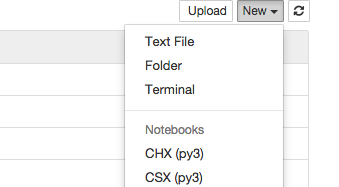
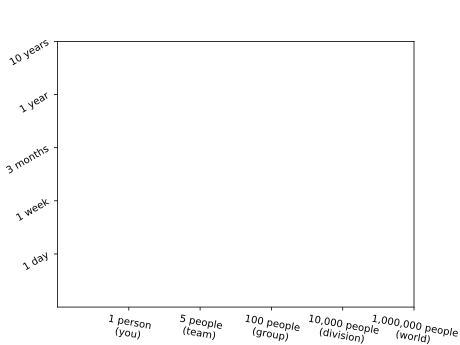
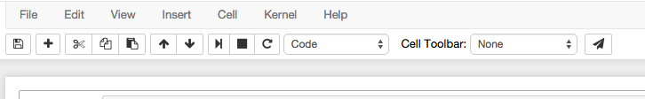
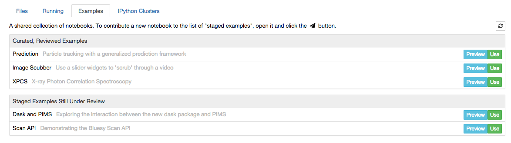
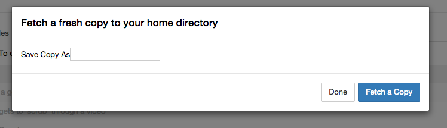

National Synchrotron Light Source II
July 2015, starting from JupyterHub v0.1
Each kernel is designated to run on a specific host.
Example kernel.json, specifying a host:
{"argv":["python", "-m", "ipykernel.ipykernel_laucnher",
"-f", "{connection_file}"],
"display_name":"Python 3 on Remote",
"host":"<HOSTNAME>" }Lessons Learned
a work in progress
Decamping both compute and data across site to the Scientific Data & Computing Center (SDCC)
Centralize Kernels on Dedicated Nodes
Who is my audience?
How Far Does your Code Go? 
Should you take the trouble to...
requirements.txt or
environment.yml.
nbexamples
our first attempt to improve on emailing notebooks
github.com/danielballan/nbexamplesnbexamples
To share, user clicks a button in the notebook toolbar
nbexamples
Users can browse all shared notebooks
nbexamples
A copy is made in the recipient's working directory
Drawbacks similar to emailing a notebook
Related Projects, similar drawbacks
nbviewer github.com/jupyter/nbviewerbookstore github.com/nteract/bookstorejupyterhub-share-link
a better solution for low-effort short-term sharing
github.com/danielballan/jupyterhub-share-linkWhat about long-term, "publish"-style sharing?
Binder
requirements.txt) and rewards themSome of Binder's "opinions" aren't a great fit for us
What else could we assemble from the components of Binder?
Ideas...
A JupyterHub Service that builds an environment from a REES without requiring Kubernetes?That is, a REST API to repo2docker
Ideas...
An alternate builder that builds a conda environment instead of a container, for the subset of REES where this is possible (i.e. no Dockerfile support of course)That is, a variant on repo2docker
that makes a conda-pack instead of an imageIdeas...
A gallery of REES containers published by other users with options to spawn in a container that mounts the recipient’s local storage to provide persistenceRelated: